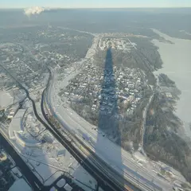
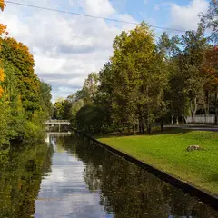
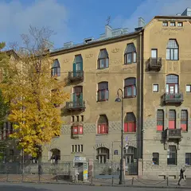
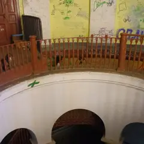

Подборку собрали 22 ноября, прошедшие события скрыты. Свежая афиша — на главной
Выходные 22 ноября
Чем заняться в выходные в Петербурге
На выходных, 22 ноября, в нашей афише 21 событие, среди них 15 выставок, 4 спектакля и 1 концерт. А если хочется просто выбраться из дома, у нас 98 планов на день: парк, усадьба или музей, а потом обед или кофе рядом.
- 21 событие
- 98 планов
Афиша на 22 ноября 21

Лахта Центр · м. Беговая · бесплатно
Восемь световых и звуковых скульптур, которые отзываются на касание и ветер и превращают научные данные в музыку. Вход без билета.
Подробнее: Третья природаПозвать сюда: Третья природаБилеты : Третья природа (страница с билетами, откроется в новой вкладке)
Фото: TomPlay148, CC BY-SA 3.0 · Wikimedia Commons
Александринский театр · м. Гостиный двор · 500–12 000 ₽ · 18+
Новый «Ревизор» Валерия Фокина на сцене, где гоголевскую комедию впервые сыграли в 1836 году. Большой вечер — около 3 ч 20 мин, начало в 18:00.
Подробнее: Ревизор с продолжениемПозвать сюда: Ревизор с продолжениемБилеты : Ревизор с продолжением (страница с билетами, откроется в новой вкладке)
Фото: Bene Riobó, CC BY-SA 4.0 · Wikimedia Commons
Commode · м. Маяковская · 390–1 990 ₽ · 18+
У микрофона только девушки-комики из Петербурга и Москвы: про бывших, свидания и всё наболевшее. Идёт почти каждый вечер на Невском — готовый план для девичника.
Подробнее: Стендап по-женскиПозвать сюда: Стендап по-женскиБилеты : Стендап по-женски (страница с билетами, откроется в новой вкладке)
Филармония им. Шостаковича, Большой зал · м. Невский проспект · 500–1 300 ₽ · 6+
Биг-бэнд Станислава Чигадаева в Большом зале Филармонии: Эллингтон, сюита из «Ла-Ла Ленда», латина и «Мамбо № 5». Билеты от 500 ₽ — отличный вечер для свидания.
Подробнее: Chigadaev Big Band. «Любовь и джаз»Позвать сюда: Chigadaev Big Band. «Любовь и джаз»Билеты : Chigadaev Big Band. «Любовь и джаз» (страница с билетами, откроется в новой вкладке)
Фото: Александровы АГ, CC BY-SA 4.0 · Wikimedia Commons
Корпус Бенуа Русского музея · м. Невский проспект · от 800 ₽
Большая юбилейная выставка Айвазовского, включая самые известные морские полотна; красивый маршрут для свидания.
Подробнее: АйвазовскийПозвать сюда: АйвазовскийБилеты : Айвазовский (страница с билетами, откроется в новой вкладке)
Фото: Никонико962, CC BY-SA 4.0 · Wikimedia Commons
Корпус Бенуа Русского музея · м. Невский проспект · от 800 ₽
Крупная ретроспектива мариниста: около двухсот работ, отреставрированный «Девятый вал», модели кораблей и мультимедийный зал. Спокойный повод для свидания.
Подробнее: АйвазовскийПозвать сюда: АйвазовскийБилеты : Айвазовский (страница с билетами, откроется в новой вкладке)
Фото: Никонико962, CC BY-SA 4.0 · Wikimedia Commons
Музей «Эрарта» · м. Горный институт · 1 500–2 950 ₽
Итальянский фэшн-фотограф, четверть века работавший с Vogue Italia: портреты звёзд, моделей и дизайнеров эпохи большой моды. Легко и красиво смотреть с подругами.
Подробнее: Бардо Фабиани. Память о прекрасном прошломПозвать сюда: Бардо Фабиани. Память о прекрасном прошломБилеты : Бардо Фабиани. Память о прекрасном прошлом (страница с билетами, откроется в новой вкладке)
Фото: Erarta, CC BY 3.0 · Wikimedia Commons
Иммерсивный театр «Морфеус» · м. Адмиралтейская · 3 000–3 500 ₽ · 18+
Иммерсивная комедия-расследование: после бурного девичника вы просыпаетесь в разгромленном номере, а невеста исчезла. Группа 2–8 человек, сеансы с 13:00 до 21:30.
Подробнее: До свадьбы доживётПозвать сюда: До свадьбы доживётБилеты : До свадьбы доживёт (страница с билетами, откроется в новой вкладке)
Музей ОБЭРИУ · м. Горьковская · от 950 ₽
Новая экспозиция в бывшей квартире Введенского о женщинах круга обэриутов: художницах, музах и хранительницах архивов.
Подробнее: Дочь дочери дочерей дочериПозвать сюда: Дочь дочери дочерей дочериБилеты : Дочь дочери дочерей дочери (страница с билетами, откроется в новой вкладке)
Музей ОБЭРИУ · м. Горьковская · от 950 ₽
Выставка о художницах и хранительницах наследия обэриутов — Алисе Порет, Вере Ермолаевой, Татьяне Глебовой: живопись, графика, письма и архив.
Подробнее: Женщины круга ОБЭРИУ. «Дочь дочери дочерей дочери»Позвать сюда: Женщины круга ОБЭРИУ. «Дочь дочери дочерей дочери»Билеты : Женщины круга ОБЭРИУ. «Дочь дочери дочерей дочери» (страница с билетами, откроется в новой вкладке)
Эрмитаж, Главный музейный комплекс · м. Адмиралтейская
Шёлковые придворные халаты, портреты цинских полководцев и воссозданный кабинет китайского учёного в Гербовом зале. Выставка работает до 22 ноября — успейте.
Подробнее: Императорский Китай. Династия Цин (1644–1911)Позвать сюда: Императорский Китай. Династия Цин (1644–1911)Билеты : Императорский Китай. Династия Цин (1644–1911) (страница с билетами, откроется в новой вкладке)
Фото: Teddy fox78, CC BY-SA 3.0 · Wikimedia Commons
Эрмитаж, Главный музейный комплекс · м. Адмиралтейская
Эскизы, по которым швейцарские мастера собирали цветные окна для ратуш и домов. Тонкая графика в небольшой галерее — приятная пауза после парадных залов.
Подробнее: Линии света. Швейцарские рисунки для витражей XVI–XVII вековПозвать сюда: Линии света. Швейцарские рисунки для витражей XVI–XVII вековБилеты : Линии света. Швейцарские рисунки для витражей XVI–XVII веков (страница с билетами, откроется в новой вкладке)
Фото: Teddy fox78, CC BY-SA 3.0 · Wikimedia Commons
Цифергауз · м. Горный институт · бесплатно · 16+
Бесплатная выставка о связях природы, человека и технологий: художники исследуют, как камера, алгоритмы и память складывают картину мира. Тихий формат для свидания.
Подробнее: Пока собирается мирПозвать сюда: Пока собирается мирБилеты : Пока собирается мир (страница с билетами, откроется в новой вкладке)
Мариинский театр · м. Садовая · 2 400–14 000 ₽ · 6+
Шекспировская история на музыку Прокофьева — один из самых эмоциональных балетов Мариинки. 20 и 21 октября в 19:00, а 22 ноября два показа: в 13:00 и 19:00.
Подробнее: Ромео и ДжульеттаПозвать сюда: Ромео и ДжульеттаБилеты : Ромео и Джульетта (страница с билетами, откроется в новой вкладке)
Фото: Jaimrsilva, CC BY-SA 4.0 · Wikimedia Commons
РОСФОТО · м. Адмиралтейская · 0+
Нижний Новгород 1896-го на старинных снимках: павильоны большой Всероссийской выставки, электрическая дорога и воздухоплавательный парк. Тихий музей рядом с Исаакием.
Подробнее: Россия 1896. К юбилею Нижегородской промышленной и художественной выставкиПозвать сюда: Россия 1896. К юбилею Нижегородской промышленной и художественной выставкиБилеты : Россия 1896. К юбилею Нижегородской промышленной и художественной выставки (страница с билетами, откроется в новой вкладке)
Эрмитаж, Главный штаб · м. Адмиралтейская
Полузабытый художник, проживший жизнь между Россией и Францией: картины из частного фонда в залах Главного штаба. Удобно совместить с импрессионистами в том же здании.
Подробнее: Русский парижанин Константин КузнецовПозвать сюда: Русский парижанин Константин КузнецовБилеты : Русский парижанин Константин Кузнецов (страница с билетами, откроется в новой вкладке)
Фото: Max A. Khlopov, CC BY-SA 3.0 · Wikimedia Commons
Иммерсивный театр «Морфеус» · м. Адмиралтейская · от 4 500 ₽ · 18+
Иммерсивный тру-крайм: вы присяжные, изучаете улики по делу о пропавшем подростке и решаете судьбу подозреваемого. Группа 6–14 человек, начало в 18:00–19:45.
Подробнее: Судный деньПозвать сюда: Судный деньБилеты : Судный день (страница с билетами, откроется в новой вкладке)
Манеж · м. Адмиралтейская · 100–800 ₽ · 12+
Тысяча с лишним экспонатов из 98 собраний страны: шаляпинский наряд царя Бориса, кусок занавеса Боровского с таганковского «Гамлета» и головинский занавес «Маскарада».
Подробнее: Сцена действияПозвать сюда: Сцена действияБилеты : Сцена действия (страница с билетами, откроется в новой вкладке)
Фото: SERGiK73, CC BY-SA 3.0 · Wikimedia Commons
Лахта Центр · м. Беговая · бесплатно · 6+
Восемь интерактивных арт-объектов из света и звука откликаются на касания и движение воздуха; один превращает городскую погоду в музыку.
Подробнее: Третья природаПозвать сюда: Третья природаБилеты : Третья природа (страница с билетами, откроется в новой вкладке)
Фото: TomPlay148, CC BY-SA 3.0 · Wikimedia Commons
Музей «Эрарта» · м. Горный институт · 1 500–2 950 ₽
Кастомные «харлеи», архивные фото и истории владельцев: каждый байк тут — портрет хозяина. Отличный повод привести в музей тех, кто в музеи обычно не ходит.
Подробнее: Harley-Davidson. Дух свободыПозвать сюда: Harley-Davidson. Дух свободыБилеты : Harley-Davidson. Дух свободы (страница с билетами, откроется в новой вкладке)
Фото: Erarta, CC BY 3.0 · Wikimedia Commons
Эрмитаж, Главный музейный комплекс · м. Адмиралтейская
Главная выставка сезона в Эрмитаже: античная скульптура и барочные образы Вечного города сведены в одну большую прогулку по Риму. Закладывайте пару часов.
Подробнее: Urbi et Orbi. Рим барочный и Рим античныйПозвать сюда: Urbi et Orbi. Рим барочный и Рим античныйБилеты : Urbi et Orbi. Рим барочный и Рим античный (страница с билетами, откроется в новой вкладке)
Фото: Teddy fox78, CC BY-SA 3.0 · Wikimedia Commons


Планы на день 24 из 98
- Музей петербургского авангарда (Дом Матюшина) · Дом-музей · м. Петроградская
- 9 минут пешкомМечта · Кофейня
Сначала маленький деревянный дом-музей, потом семь минут пешком до кофейни с осенними напитками. Камерно и без спешки.
Открыть план: Авангард и сезонный кофеПозвать сюда: Авангард и сезонный кофе
Фото: MaryannaNesina, CC BY 3.0 · Wikimedia Commons
- Парк Александрия · Парк · ж/д Новый Петергоф
- 8 минут пешкомДворец Коттедж · Музей
Сначала идёте по аллеям парка к заливу, потом заходите в маленький дворец в шести минутах. Тихо, без толп парадного Петергофа.
Открыть план: Александрия и дворец у заливаПозвать сюда: Александрия и дворец у залива
Фото: Egregiu, CC BY-SA 4.0 · Wikimedia Commons
- Museum Route 66 · Музей · м. Невский проспект
- 3 минуты пешкомСпас на Крови · Музей
- 9 минут пешкомЧАО Какао · Какаочная
Фотографируетесь в декорациях старого кино, проходите мимо Спаса на Крови и греетесь какао в пяти минутах. Лёгкий план, где есть чем заняться и о чём говорить.
Открыть план: Америка 60-х и какаоПозвать сюда: Америка 60-х и какао
Фото: Рустам Абдрахимов, CC BY 3.0 · Wikimedia Commons
- Музей «Аптека доктора Пеля» · Историческая аптека-музей · м. Василеостровская
- 24 минуты пешкомСтанция метро «Горный институт» · Новая станция метро
Склянки и шкафы старой аптеки на 7-й линии, потом новая станция «Горный институт» со светильниками-кристаллами.
Открыть план: Аптека Пеля и станция-кристаллПозвать сюда: Аптека Пеля и станция-кристалл
Фото: Florstein, CC BY-SA 4.0 · Wikimedia Commons
- Дом с башнями · Доходный дом-«замок» · м. Петроградская
- 6 минут пешкомНабережная реки Карповки · Набережная
- 5 минут пешкомМечта · Кофейня
От дома-замка на площади спускаетесь к Карповке и идёте вдоль воды, а греться заходите в кофейню — она в пяти минутах от набережной.
Открыть план: Башни, Карповка и матчаПозвать сюда: Башни, Карповка и матча
Фото: Grigorius m, CC BY-SA 4.0 · Wikimedia Commons
- Думская башня · Смотровая площадка · м. Невский проспект
- 6 минут пешкомНабережная канала Грибоедова · Набережная
- 7 минут пешкомOy! · Коктейльный бар
Поднимаетесь на башню к закату, спускаетесь к каналу Грибоедова и минут за десять доходите до коктейльного бара. Сначала виды, потом разговор.
Открыть план: Башня над Невским и коктейлиПозвать сюда: Башня над Невским и коктейли
Фото: Vadim Indeikin, CC BY-SA 3.0 · Wikimedia Commons
- Путь · Галерея · м. Сенная площадь
- 7 минут пешкомДом Флоу · Кофейня в особняке модерн
Днём проходите личные задания в галерее, затем пять минут пешком до кофейни в особняке модерн: спокойное место, чтобы обсудить, кому что откликнулось.
Открыть план: Выставка о себе и кофе в особнякеПозвать сюда: Выставка о себе и кофе в особняке
Фото здания: Артём Светлов, CC BY-SA 4.0 · Wikimedia Commons
- Музей Довлатова · Музей · м. Достоевская
- 7 минут пешкомМандрагора · Кафе
Камерный музей в коммуналке писателя и пять минут пешком до кафе, где к коктейлю гадают по руке и на кофейной гуще — будет что сравнить.
Открыть план: Довлатов, а потом тароПозвать сюда: Довлатов, а потом таро
Фото: Kommunalka1912, CC BY-SA 4.0 · Wikimedia Commons
- Дом с башнями · Доходный дом-«замок» · м. Петроградская
- 4 минуты пешкомSecret Garden · Оранжерея
- 4 минуты пешкомNerede · Кофейня
Дом с башнями на площади Льва Толстого, рядом зимний сад с фонтаном, затем кофе в Nerede — всё в паре минут ходьбы.
Открыть план: Замок, пальмы и кофеПозвать сюда: Замок, пальмы и кофе
Фото: Grigorius m, CC BY-SA 4.0 · Wikimedia Commons
- Анненкирхе · Арт-пространство · м. Чернышевская
- 9 минут пешкомСундук · Арт-кафе
Смотрите выставку в старой кирхе и за семь минут доходите до кафе, где каждая стена — отдельная коллекция. Два необычных интерьера подряд.
Открыть план: Кирха и кафе-кунсткамераПозвать сюда: Кирха и кафе-кунсткамера
Фото: Екатерина Борисова, CC BY-SA 4.0 · Wikimedia Commons

- Masters Bookstore · Книжный об искусстве и дизайне · м. Чкаловская
- 23 минуты пешкомКаменный остров · Остров дач и особняков
Альбомы и кофе в Masters на Барочной, потом тихие аллеи и деревянные дачи Каменного острова.
Открыть план: Книжный об искусстве и Каменный островПозвать сюда: Книжный об искусстве и Каменный остров
Фото: Alexey Komarov, CC BY 3.0 · Wikimedia Commons
- Крейсер Аврора · Музей-корабль · м. Горьковская
- 14 минут пешкомЛетний сад · Сад
Осмотреть корабль, затем перейти Неву по Троицкому мосту и гулять по аллеям сада: около пятнадцати минут пешком.
Открыть план: Крейсер и Летний садПозвать сюда: Крейсер и Летний сад
Фото: Smart Vombat, CC BY 3.0 · Wikimedia Commons
- Думская башня · Смотровая площадка · м. Невский проспект
- 4 минуты пешкомДом книги · Книжный магазин
- 7 минут пешкомСейф Coffee · Кофейня
Двести ступеней ради панорамы, потом три минуты до Дома книги за открытками и кофе по соседству. Всё в одном квартале у Невского.
Открыть план: Крыши, книги и кофеПозвать сюда: Крыши, книги и кофе
Фото: Florstein, CC BY-SA 4.0 · Wikimedia Commons
- Ледокол «Красин» · Музей-корабль · м. Горный институт
- 13 минут пешкомМонастырские пышки · Пышечная
Осмотреть ледокол «Красин» у набережной, а через десять минут вдоль Невы согреться пышками и кофе.
Открыть план: Ледокол и пышкиПозвать сюда: Ледокол и пышки
Фото: Andrey Korchagin, CC BY-SA 2.0 · Wikimedia Commons

- Дом Лидваля · Доходный дом, северный модерн · м. Горьковская
- 19 минут пешкомДом с башнями · Доходный дом-«замок»
- 10 минут пешкомМузей петербургского авангарда (Дом Матюшина) · Дом-музей
Совы и пауки дома Лидваля, замок с башнями на площади Толстого и деревянный дом Матюшина среди камня.
Открыть план: Модерн ПетроградкиПозвать сюда: Модерн Петроградки
Фото: Wolfgang Moroder, CC BY-SA 3.0 · Wikimedia Commons
- Музей Штиглица · Музей · м. Чернышевская
- 3 минуты пешкомCasimir · Кофейня
Роскошные залы музея Штиглица, а через две минуты — уютная кофейня с осенним меню, чтобы согреться супом или оладьями.
Открыть план: Музей Штиглица и тыквенный супПозвать сюда: Музей Штиглица и тыквенный суп
Фото: Lion10~commonswiki, CC BY-SA 4.0 · Wikimedia Commons
- Оранжерея Таврического сада · Оранжерея · м. Чернышевская
- 5 минут пешкомAm Saint · Кофейня
Фотографируетесь среди лиан и кактусов, а потом семь минут идёте до кофейни. Короткий план, когда хочется зелени посреди серого сезона.
Открыть план: Оранжерея и кофеПозвать сюда: Оранжерея и кофе
Фото: Екатерина Борисова, CC BY-SA 4.0 · Wikimedia Commons

- Парадная с ротондой (дом Яковлева) · Парадная с ротондой · м. Сенная площадь
- 6 минут пешкомПышечная на Садовой · Пышечная
Заглянуть в парадную с ротондой на Гороховой, а через пять минут пешком согреться пышками у Апраксина двора.
Открыть план: Ротонда и пышкиПозвать сюда: Ротонда и пышки
Фото: Artyom Svetlov, CC BY-SA 4.0 · Wikimedia Commons
- Парадная с ротондой (дом Яковлева) · Парадная с ротондой · м. Сенная площадь
- 9 минут пешкомДом Флоу · Кофейня в особняке модерн
Круглая лестница с колоннами до купола, потом кофе на пяти этажах особняка с оранжереей на Садовой.
Открыть план: Ротонда на Гороховой и кофе в доме модернПозвать сюда: Ротонда на Гороховой и кофе в доме модерн
Фото: Artyom Svetlov, CC BY-SA 4.0 · Wikimedia Commons
- Музей-фотосалон Карла Буллы · Старинное фотоателье · м. Гостиный двор
- 2 минуты пешкомПышки из детства · Пышечная
Сначала старинное фотоателье на Невском, потом в двух минутах пешком — пышки с кофе, чтобы обсудить увиденное.
Открыть план: Старые снимки и пышкиПозвать сюда: Старые снимки и пышки
Фото: Karl Bulla, общественное достояние · Wikimedia Commons
- Театральная библиотека · Библиотека · м. Гостиный двор
- 6 минут пешкомМузей-фотосалон Карла Буллы · Старинное фотоателье
- 4 минуты пешкомCafé Alto · Кафе-кофейня
Экскурсия или выставка в библиотеке, затем пять минут до старинного фотоателье с видом на крыши Невского, а после — кофе неподалёку. Всё в пределах десяти минут ходьбы.
Открыть план: Театральный квартал и кофеПозвать сюда: Театральный квартал и кофе
Фото: Chirukhin Igor, CC BY-SA 4.0 · Wikimedia Commons
- Оранжерея Таврического сада · Оранжерея · м. Чернышевская
- 4 минуты пешкомТаврический сад · Сад
- 8 минут пешкомСундук · Арт-кафе
Греетесь среди пальм, проходите через сад и минут через шесть садитесь обедать в кафе, увешанном редкостями. Тепло, прогулка и еда по очереди.
Открыть план: Тропики, сад и кафе с историейПозвать сюда: Тропики, сад и кафе с историей
Фото: Екатерина Борисова, CC BY-SA 4.0 · Wikimedia Commons
- Café Alto · Кафе-кофейня · м. Гостиный двор
- 4 минуты пешкомМузей-фотосалон Карла Буллы · Старинное фотоателье
Кофе среди винтажной мебели в Café Alto, потом старинное фотоателье Буллы, где можно сняться в декорациях.
Открыть план: Фотоателье Буллы и кофе на КараваннойПозвать сюда: Фотоателье Буллы и кофе на Караванной
Фото: Karl Bulla, общественное достояние · Wikimedia Commons
- Главный штаб Эрмитажа · Музей · м. Адмиралтейская
- 2 минуты пешкомПышки на Большой Морской · Пышечная
Выставки в Главном штабе Эрмитажа и пышки с кофе в двух минутах на Большой Морской.
Открыть план: Эрмитаж и пышкиПозвать сюда: Эрмитаж и пышки
Фото: Max A. Khlopov, CC BY-SA 3.0 · Wikimedia Commons


Выходные в календаре
Бесплатные события и наш выбор на выходные — на две недели вперёд. Подпишись один раз, и календарь будет обновляться сам.
Подписаться в календаре: бесплатные события и выходные в ПетербургеGoogle Календарь: бесплатные события и выходные в Петербурге (откроется в новой вкладке)Файл .ics: бесплатные события и выходные в Петербурге
Как позвать
- Выбери план, место или событие — в карточке адрес, цены и маршрут в Яндекс Картах.
- Нажми «Позвать сюда» — соберётся приглашение-игра для свидания или голосование для компании.
- Отправь ссылку в любой мессенджер: тебе ответят, а компания отметит, куда и когда может. Бесплатно и без регистрации.